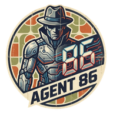

Conversations
Streamed Markdown with syntax highlighting, and the model's reasoning, which you can fold away.

agent86-web gives you agent86's conversation, tool calls, approvals, and saved sessions in a browser tab. The agent itself does not change: it still runs on your machine, with your config, keys, sandbox, memory, and sessions.
npx agent86-web --root ~/code
Browser (React SPA) ──WebSocket──▶ agent86-web bridge (Node) ──stdio──▶ agent86 acp
chat, diffs, JSON-RPC serves the UI, checks the real agent:
approvals, sessions (ACP v1) origin and token, spawns models, tools,
one agent86 per thread sandbox, memory
agent86 already speaks the Agent Client Protocol. agent86-web is an ACP client in the browser, with a small local bridge between a WebSocket and agent86's standard input and output. agent86 needs no changes.
Streamed Markdown with syntax highlighting, and the model's reasoning, which you can fold away.
Every edit and command waits with the exact diff in view. An inbox lists the approvals waiting behind it, including which sub-agent asks.
Pick up sessions started at a terminal, and continue a browser session at a terminal
with
agent86 --resume.
Each thread is its own agent86 in a project folder. Threads reconnect by themselves and survive restarts.
See the facts and episodes agent86 has stored, pin the ones that matter, and forget the wrong ones.
Hand agent86 an API key through a masked entry, remembered for the project if you like. The model only ever sees the name.
Model and approval-mode pickers, / commands, @ file
mentions, and shortcuts that mirror the terminal.
No account and no cloud. Your config, keys, and sandbox stay exactly where they are.
Install agent86 and give it a model key, if you haven't already:
npm install -g agent86
agent86 keys set openrouter # or anthropic, openai, …Start agent86-web with the folders threads may run in:
npx agent86-web --root ~/code
It prints a one-time link and opens it in your browser. Add
--port 8686 --save-port once to keep the same port.
Pick a project, start a thread, and chat.
All options are in the user guide. To use it from another device, forward the port over SSH.
agent86-web can make agent86 edit files and run commands, so the bridge is strict:
127.0.0.1, ::1).HttpOnly,
SameSite=Strict cookie.
Host, Origin, and a CSRF header, which stops DNS
rebinding and cross-site requests.
--root folders you allow.The full threat model is in docs/SECURITY.md.